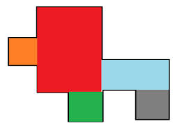

Enoncé

Dans ce challenge, vous devez déterminer le plus petit rectangle qui inclut une série de rectangles.
Chaque rectangle est défini par deux coins opposés, chaque coin étant lui même défini par des coordonnées x y. Le jeu de données à traité contient un rectangle par ligne.
Le programme à implémenter doit donner les coordonnées du plus petit rectangle qui englobe tous les rectangles du jeu de données. Les
coordonnées retournées par le programme doivent être dans un ordre précis : - x minimal y minimal
- x minimal y maximal
- x maximal y minimal
- x maximal y maximal
Entrée
Ligne 1 : le nombre p de rectangles à inclure.
Ligne 2 à p+1 : 4 nombres entiers séparés par des espaces correspondant aux coordonnées x et y de deux coins opposés du rectangle.
Sortie
1 ligne de huit nombres entiers séparés par un espace correspondant aux coordonnées du plus petit rectangle incluant tous les rectangles. Les coordonnées doivent être dans l'ordre défini dans l'énoncé.